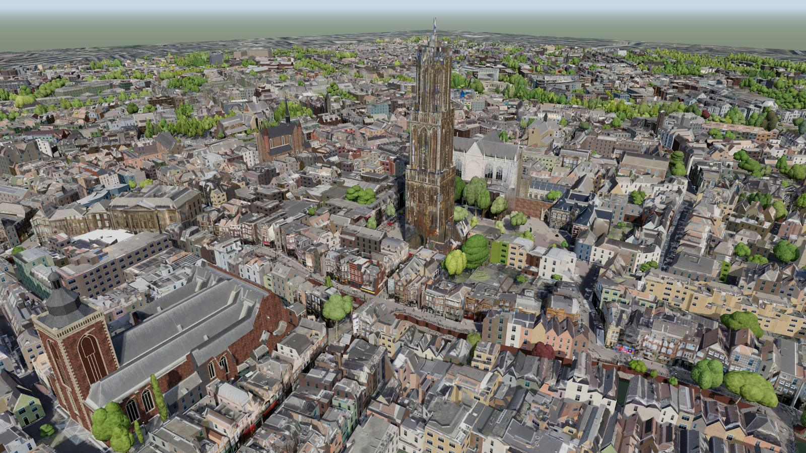

De binnenstad van Utrecht, nagebouwd met open data die iedereen kan downloaden.

Domtoren, Buurkerk, OudegrachtElk gebouw, elke boom, brug, elk verkeersbord en elk terrastafeltje in dit model staat er dankzij een dataset die een overheid, een universiteit of een groep vrijwilligers gratis publiceert: zonder account, zonder API-sleutel en zonder contract. Vier vierkante kilometer rond de Dom, 64 tegels, straat voor straat van textuur voorzien.
Wat we níet gebruikten
Geen Google, geen Mapillary, geen Flickr, geen Instagram, geen YouTube, geen commerciële beelden en geen API met sleutel. Straatfoto's komen van Panoramax en Wikimedia Commons; al het andere van PDOK, de gemeente, de TU Delft, NDW, OVapi, OpenStreetMap en Het Utrechts Archief.